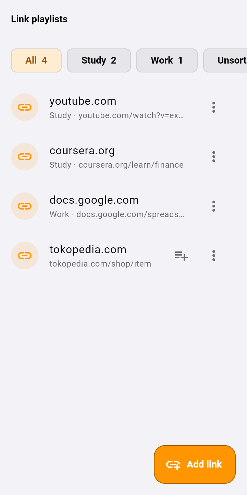

Di layar kalkulator, ketuk tulisan Calculator di atas tiga kali dengan cepat (dalam satu detik). Tidak ada tombol khusus. Memang sengaja dibuat begitu, supaya orang lain tidak tahu ada brankas.
Pertama kali: buat password (minimal 4 karakter), lalu ketik sekali lagi untuk konfirmasi.
Selanjutnya: ketuk tiga kali, masukkan password, dan brankas terbuka.
Untuk menutup, ketuk ikon gembok di kanan atas. Brankas juga terkunci sendiri saat kamu keluar dari aplikasi.
Password tidak bisa dipulihkanTidak ada fitur "lupa password". Kalau password hilang, isi brankas tidak bisa dibuka oleh siapa pun. Catat password-mu, dan buat backup.
Lebih cepat dengan sidik jariSetelah masuk, buka ikon perisai → Biometric unlock. Lihat Keamanan.
2. Kalau password salah
Password yang salah tidak ditolak. Yang terbuka adalah brankas lain yang kosong. Ini fitur keamanan: kalau seseorang memaksamu membuka aplikasi, ketik password lain, dan dia hanya akan melihat brankas kosong.
Isi aslimu tidak hilang. Kalau brankas tiba-tiba kosong, kemungkinan besar kamu salah ketik. Kunci lagi, lalu masukkan password yang benar.
Apa pun yang disimpan saat memakai password yang salah, tersimpan di brankas kosong milik password itu, terpisah dari brankas aslimu.
Sidik jari selalu membuka brankas yang asli.
3. Isi brankas
Setelah terbuka, ada empat kartu:
Kartu
Isinya
Encrypted Note
Catatan pribadi, checklist, dan gambar.
Hidden File
Foto, video, dan file yang kamu pilih sendiri untuk disembunyikan.
Shared Content
Apa pun yang kamu kirim dari aplikasi lain lewat tombol Share, termasuk link. Di sini juga ada playlist link.
Reminders
Pengingat rahasia.
Ikon perisai di kanan atas membuka pengaturan Security.
4. Encrypted Note
Ketuk Create a note untuk catatan biasa, atau Start a checklist untuk daftar centang.
Di dalam catatan, tombol Checklist di atas mengubah baris yang dipilih menjadi daftar centang. Kartu catatan menampilkan progresnya, misalnya "2 of 5 done".
Kamu bisa menambahkan gambar dan memberi kategori.
5. Hidden File: menyembunyikan foto & file
Buka Hidden File, lalu ketuk Hide files.
Pilih foto, video, atau file.
Aplikasi mengenkripsi salinannya, memastikan salinan itu identik dengan aslinya, lalu menghapus file aslinya dari galeri atau folder. Android mungkin meminta konfirmasi hapus. Ketuk Izinkan.
File asli dipindahkan, bukan disalinSetelah disembunyikan, foto tidak ada lagi di galeri. Untuk mengembalikannya, buka file itu di brankas → titik tiga → Unhide (save a normal copy).
Kalau file aslinya gagal dihapus (misalnya kamu menolak konfirmasi Android), file itu diberi tanda Original still on this device. Ketuk Try removing the original again untuk mencoba lagi.
Foto, video, dan audio bisa dibuka langsung di dalam brankas. Geser ke samping untuk pindah ke file berikutnya. Video punya tombol putar, maju/mundur 10 detik, kecepatan, dan layar penuh.
6. Shared Content: kirim dari aplikasi lain
Di aplikasi lain (Galeri, Instagram, TikTok, WhatsApp, browser…), ketuk tombol Share / Bagikan.
Pilih Calculator. Kalau aplikasi sedang disamarkan, pilih nama samarannya, misalnya Weather.
Isinya (foto, video, file, link, atau teks) tersimpan terenkripsi di Shared Content. Kalau berupa file, aslinya dipindahkan seperti di Hidden File.
Di dalam Shared Content, tombol Add juga menyediakan Import a file dan Paste a link.
7. Playlist link
Kelompokkan link yang kamu simpan berdasarkan tujuan, misalnya Study, Work, Resep, atau Tonton nanti. Namanya bebas.
Buka Shared Content, lalu ketuk Playlists di kanan atas.
Ketuk New playlist, beri nama, lalu centang link yang mau dimasukkan (atau tempel link baru).
Ketuk chip playlist di atas untuk melihat isinya. Link di dalamnya diberi nomor sesuai urutan disimpan.
Link yang belum masuk playlist punya tombol +≡ untuk langsung memasukkannya.
Waktu menambah link lewat Add link, kamu bisa langsung memilih playlist-nya.

Chip playlist di atas. Link tanpa playlist punya tombol untuk memasukkannya.
Tekan lama chip playlist untuk menambah link, mengganti nama, atau menghapus playlist. Menghapus playlist tidak menghapus link-nya.
Satu link hanya bisa masuk satu playlist.
8. Album
Foto dan file di Hidden File atau Shared Content juga bisa dikelompokkan: buka titik tiga pada item → New album… atau pilih album yang sudah ada. Pilihan album muncul di atas setelah ada item yang dimasukkan.
9. Reminders: pengingat rahasia
Buka Reminders, lalu ketuk New reminder.
Isi Remind me to (isi rahasianya), Note (optional), dan tanggal-jamnya.
Isi The notification says dengan teks samaran yang akan muncul di notifikasi, misalnya "Minum air". Isi aslinya tidak pernah tampil di notifikasi.
Pilih Sound: Alarm (tetap berbunyi walaupun HP dalam mode senyap), Normal, atau Silent. Lalu ketuk Save.
Bisa telat beberapa menitAndroid kadang menunda notifikasi untuk menghemat baterai, jadi pengingat bisa datang beberapa menit lebih lambat.